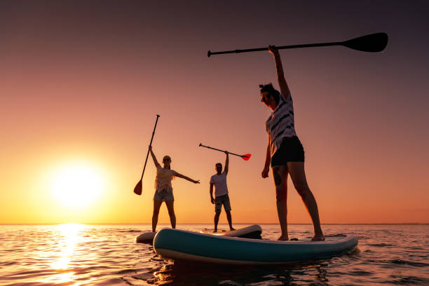
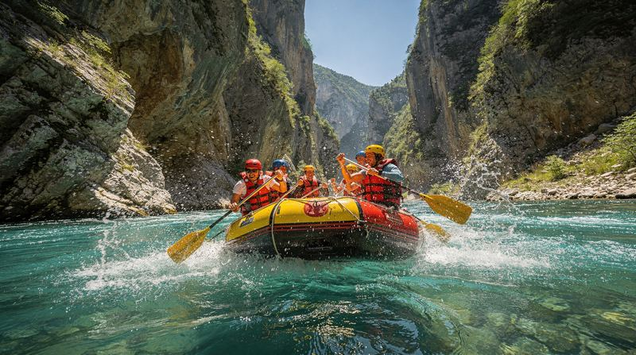

Our goal is to help first-time rafters feel at home on the Vjosa River. Before each trip, our guides help everyone fit their life jackets and practice paddling together. Once we launch, we make time to enjoy the views along the way.


Our goal is to help first-time rafters feel at home on the Vjosa River. Before each trip, our guides help everyone fit their life jackets and practice paddling together. Once we launch, we make time to enjoy the views along the way.
Vjosa River Rafting began in Përmet, Albania, when two siblings started taking friends down the river on weekends. Their favorite part of each trip was stopping for lunch on a quiet riverbank. As more families joined them, they brought local guides onto the team. We still stop at that same spot on our family trips today.